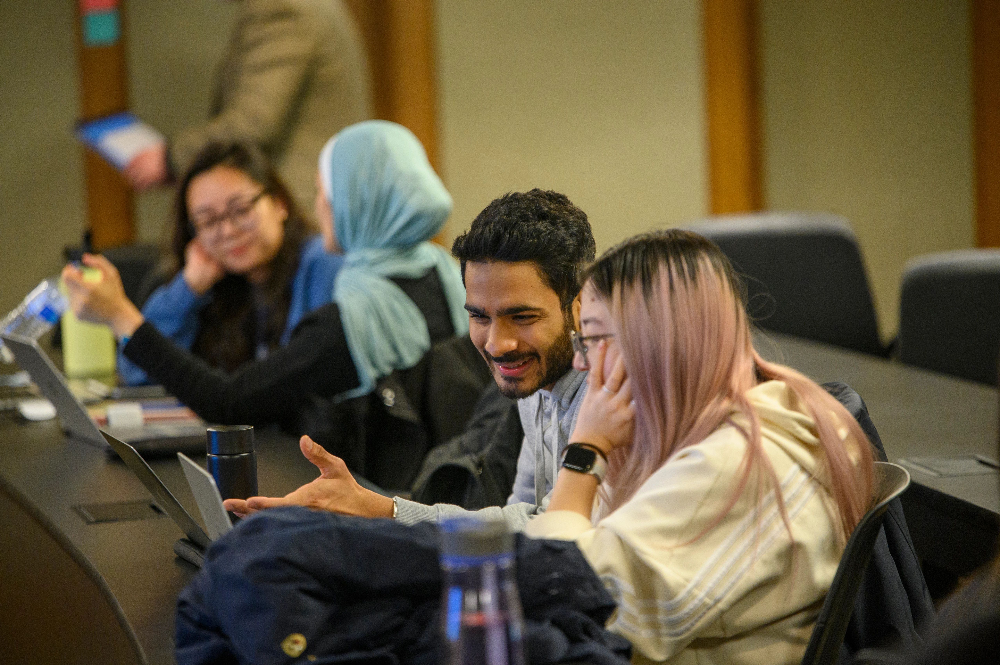

Center for the Education of Women
At CEW+, we navigate circumstantial barriers by providing academic, financial, and professional support to help you reach your personal potential. Established to support women through higher education, we lift up women and all underserved communities at U-M and beyond. Through career and education counseling, funding, workshops, events, and a diverse, welcoming community, we exist to empower. We are CEW+, and we’re here to help you reach your potential.
About us
CEW+ empowers women+ and underserved individuals in the University of Michigan and surrounding communities by serving as an advocate and providing resources to help individuals reach their academic, financial, and professional potential.
history
Established in 1964, the Center for the Education of Women+ was a pioneering university women’s center. Designed to serve the needs of women students as well as women returning to school or work, CEW+ (then known as the Center for the Continuing Education of Women) was founded with a three-part mission of service, advocacy, and research. The Center for the Education of Women+ (now known as CEW+) continues its work today, serving University students, staff and faculty, community members, and all genders, facing education, employment, or other life issues.
News
“Let no one tell her otherwise”: Remembering Jane M. Bloom, 1924-2022
May 28,2024
The family of the late Jane Bloom, M.D., will hold a celebration of life on July 13th, 2024, from 1:00 pm to 4:00 pm at the Eagle Crest Golf Club at…
CEW+ Celebrates 2023-24 Graduates
May 15,2024
On May 2nd, CEW+ marked the end of the term by honoring all the graduating students connected to the Center through scholarships, fellowships, or membership in Michigan Caregivers and Student Parents…
CEW+ News: Spring 2024
April 17, 2024
You can read the latest edition of our CEW+ News magazine here. Please take note that the magazine is interactive; you can click on bolded words, images, graphics, and ads to read and…